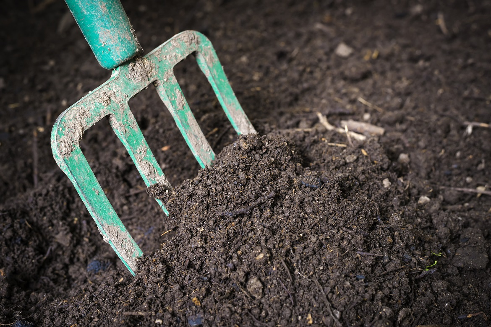
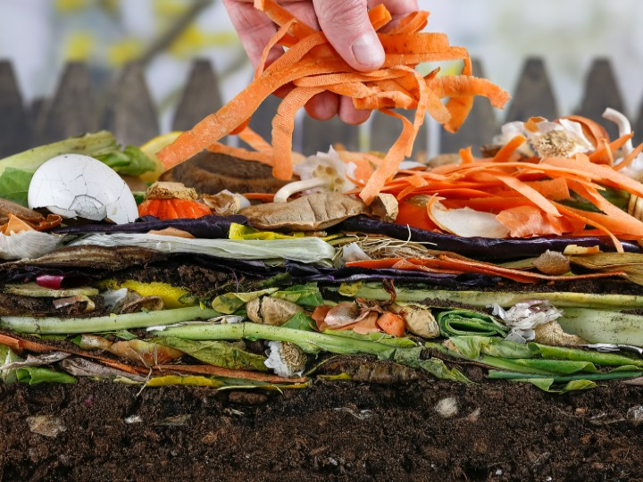
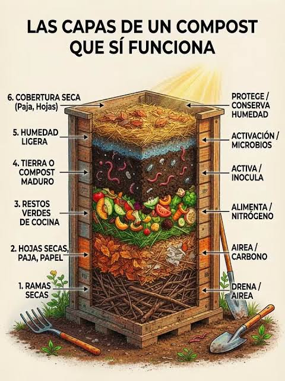

¿Qué es la Composta?
La composta es el resultado del proceso de descomposición biológica de la materia orgánica de origen vegetal y animal. A través de este proceso, microorganismos como bacterias, hongos y pequeños invertebrados (como lombrices y escarabajos) transforman los residuos orgánicos en un abono natural rico en nutrientes esenciales para la tierra.
Hacer composta en casa es una de las acciones ecológicas más efectivas que podemos realizar a nivel individual para reducir nuestra huella ambiental y devolverle nutrientes al suelo.

Beneficios del Compostaje Orgánico
El compostaje trae consigo grandes ventajas tanto para el medio ambiente como para la economía del hogar:
- Reducción de residuos: Hasta un 40% de los residuos sólidos que generamos en casa son orgánicos y pueden compostarse en lugar de ir a los basureros.
- Mejora de la estructura del suelo: Aumenta la retención de agua y humedad en el suelo, permitiendo que las plantas resistan mejor las sequías.
- Nutrientes naturales: Aporta nitrógeno, fósforo, potasio y micronutrientes sin necesidad de fertilizantes químicos sintéticos.
- Disminución de gases contaminantes: Evita la descomposición anaeróbica en vertederos, la cual genera metano, un potente gas de efecto invernadero.
Materiales Permitidos y No Permitidos
Para mantener un buen equilibrio biológico en la composta, es fundamental diferenciar entre los materiales ricos en nitrógeno (verdes) y los ricos en carbono (cafés).
Materiales Verdes (Nitrógeno / Húmedos)
- Cáscaras de frutas y restos de verduras.
- Posos y restos de café molido.
- Bolsitas de té e infusiones naturales.
- Cascarones de huevo triturados.
- Pastos y césped recién cortado.
Materiales Cafés (Carbono / Secos)
- Hojas secas de árboles y arbustos.
- Ramas delgadas y trozos de madera.
- Cartón desmenuzado sin tintas plásticas.
- Servilletas y papel de cocina no graso.
- Aserrín y virutas de madera limpia.

⚠️ Lo que NUNCA debes agregar:
Evita restos de carne, huesos, lácteos, aceites, heces de mascotas (perros/gatos) o plantas enfermas, ya que atraen plagas y generan malos olores.
Paso a Paso para Elaborar tu Composta
- Elige el contenedor: Puedes usar un huacal de madera, una cubeta de plástico con agujeros para ventilación o hacer un espacio directo en el suelo.
- Capa base (Drenaje): Coloca una primera capa de 5 a 10 cm de ramas gruesas o trozos de cartón en el fondo para favorecer el aireado.
- Capas alternadas: Añade una capa de residuos verdes (húmedos) y cúbrela con una capa de materiales cafés (secos). La regla general es poner el doble de materia café que verde.
- Humedad y Aireación: La mezcla debe estar húmeda como una esponja escurrida. Remueve la composta cada semana para oxigenarla.

Mantenimiento y Solución de Problemas
Monitorear tu composta te garantizará obtener un abono oscuro, con olor a tierra mojada y textura esponjosa en aproximadamente 2 a 4 meses.
| Síntoma / Problema | Causa Probable | Solución Recomendada |
|---|---|---|
| Olor desagradable o podrido | Exceso de humedad o falta de aire | Mezclar, oxigenar y agregar materiales secos (cafés). |
| La mezcla no se descompone | Falta de humedad o de nitrógeno | Rociar un poco de agua o agregar más restos verdes. |
| Presencia de mosquitas de fruta | Materia verde expuesta en la superficie | Cubrir siempre los restos de comida con una capa de hojas secas. |
Asistente de Diagnóstico del Estado de tu Composta
Haz clic en el botón según la apariencia actual de tu composta para recibir un consejo instantáneo sobre su cuidado:
Selecciona una opción arriba para revisar el estado de tu composta.
Envianos tu experiencia
Llena este formulario